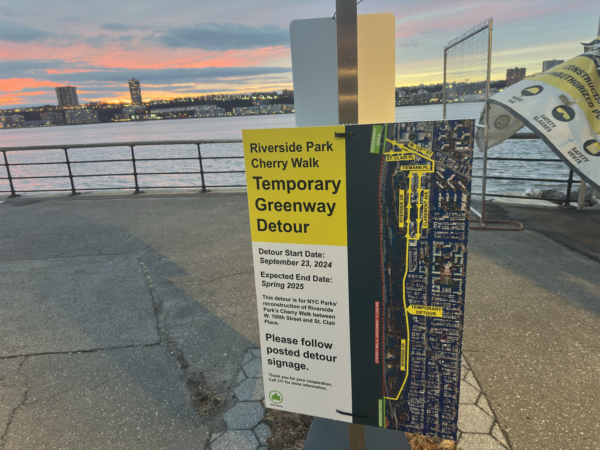

By Emma Rosenberg
December 21, 2024
<
WEST HARLEM– Ira Gershenhorn, 72, was cycling home on a detour around Cherry Walk after a Community Board 9 meeting on Dec. 4 when he says he was involved in a hit-and-run accident that left him with a missing front tooth.
“I was coming back from a Community Board 9 meeting on Broadway and 135th, and normally I would take Cherry Walk. Because I knew Cherry Walk was closed. I came up Broadway,“ said Gershenhorn, a 35-year Upper West Side resident and programmer. “There was at least a block just the distance between me and the nearest car, I thought it was completely safe. And then I got hit.”
West Harlem residents are sounding the alarm over safety concerns on the streets, citing a lack of protected bike lanes in their community forcing cyclists, pedestrians, and drivers to navigate shared, often dangerous spaces.
The issue is reigniting calls for better urban planning and more protected bike lanes in Manhattan Community Board 9, which includes Morningside Heights, Hamilton Heights, Sugar Hill and Manhattanville.
Cherry Walk is a recreational path in Riverside Park along the Hudson River, is a key route for runners, walkers, and cyclists. The New York City Parks Department closed the path between West 100th Street and St. Clair Place (West 129th Street) for construction to remove cracks and uneven surfaces, according to an emailed statement from department spokesperson Kelsey Jean-Pierre.The path is slated to reopen in the spring of 2025.
The closure cuts out a vital northbound and southbound route, requiring cyclists to detour up a hill from West 125th Street at St. Clair Place or Broadway.
Data from the NYPD, as of Dec. 13, highlights the dangers along Broadway and Amsterdam Avenue—two major avenues in the community. Nearly 35 people were injured in accidents on Broadway and 43 at the cross street, while 21 were injured on Amsterdam Avenue and 38 at the cross street.
“Having a protected bike lane, the stats yield that pedestrians become safer, bicyclists become safer and the motorists become safer,” said Felipe Castillo, a Community Board 9 member, during a sub-committee meeting.
The ongoing Cherry Walk closure coincides with a December 11 New York City Council hearing on the proposed Priscilla’s Law. The bill, introduced after a woman was struck by an e-bike running a red light in Chinatown, would require all e-bikes to have license plates registered with the city’s Department of Transportation (DOT).
The bill has sparked debate over accountability and enforcement from the NYPD. Some are concerned delivery workers could be unfairly targeted. The DOT did not respond to a request for comment.
Councilmember Yusef Salaam, initially a supporter of the bill, has since withdrawn his backing but did not provide a statement explaining his decision. Salaam did not respond to a request for comment for this story.
“We have to manage for the safe and efficient movement of people and vehicles. E-bikes, regular bikes, and scooters are in the city. Our job is to make those small percentage that are reckless be accountable,” said DOT Commissioner Ydanis Rodriguez during the hearing.
As both a bike and e-bike owner and a volunteer steward in city parks, Gershenhorn said he does not support Priscilla’s Law (Intro 606).
“If the city put restrictions on e-bikes and it affected food delivery scooters, it would actually make New York City more dangerous for the remaining bikers,” he explained. Gershenhorn added in a separate letter against Intro 606, that placing restrictions on e-bikes would significantly limit his mobility around the city.
Gershenhorn worries that the bill could make the city more expensive for those coming in from out of town.
“Placing too many restrictions on the use of e-bikes would actually make the city more dangerous, not less. It would also make the city more expensive and raise costs to people who don't live here,” he said.
Source List:
Ydanis Rodriguez- Department of Transportation Commissioner, statement is from the December 11 NY City Council hearing on Priscilla’s Law
Yusef Salaam- Did not respond to a request for comment.
New York City Department of Transportation- Did not respond to a request for comment.
New York City Department of Parks & Recreation -Spokesperson Kelsey Jean-Pierre